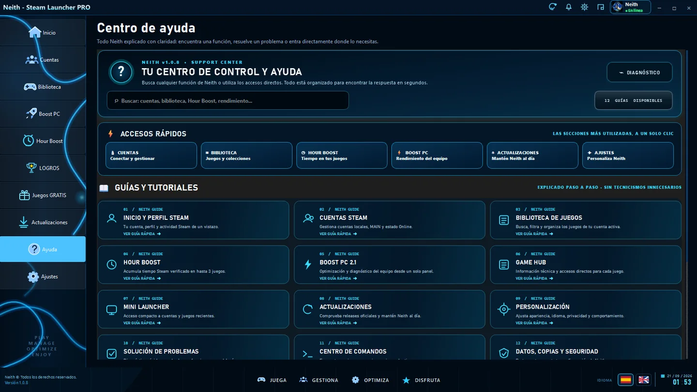

Instalación
Descarga la release oficial más reciente desde GitHub y ejecuta el instalador de Windows.
Guía rápida para instalar, actualizar y orientarte dentro del launcher.

Descarga la release oficial más reciente desde GitHub y ejecuta el instalador de Windows.
Neith dispone de un canal oficial de actualización. Mantén el launcher actualizado para recibir mejoras y correcciones.
Cuentas, Biblioteca, Hour Boost, Boost PC, Logros, Juegos Gratis, Actualizaciones, Ayuda y Ajustes forman el núcleo visual del launcher.
Instala la versión estable más reciente desde el canal oficial.